Régis Regi
Coordenador de Pós-Produção Roteirista Editor Curador
Do conform de originais para streamings globais à curadoria da eletrônica underground carioca.
↓ Role- Anos de audiovisual
- 08
- Plataformas & canais
- 09
- Produções entregues
- 20+
- Frentes de atuação
- 04
Sobre
Coordenação de pós-produção entre produtoras, ilhas de edição e plataformas: cronograma macro, gestão de ativos, conform técnico e controle de qualidade sob os padrões de streamings globais. Ao lado disso, roteiro de formatos originais e curadoria de conteúdo.
Formação em Cinema (UFF) e especialização em Roteiro (AIC), somadas a um perfil técnico, estético e estratégico. No fluxo de trabalho, ferramentas de IA entram como aceleradores da pós: transcrição e decupagem automatizadas, edição baseada em texto e controle de qualidade assistido, sempre a serviço do padrão técnico e da narrativa.
Trabalho
-
01
Coordenação de pós · Canal OFF
Padrão de canal,
ritmo de agênciaRespondi pelo fluxo de pós das séries documentais e dos programas lifestyle do Canal OFF: prazo, alocação de equipe e entrega dentro do padrão técnico do canal. Em paralelo, conduzi a edição e a finalização das campanhas da agência para Banco C6, Cerveja Praya e Brasil Surfe Clube, com gestão de ativos e controle de processo.
- Séries documentais e lifestyle
- Campanhas de marca
- 2025 → jun 2026
Organização de fluxo03 campanhas em paralelo
-
02
Curadoria e audiovisual · cena eletrônica carioca
Sets
audiovisuaisEscolho os artistas, defino a linha estética de cada sessão e assino a edição e a finalização dos sets. Do primeiro ao último episódio, a mesma identidade, mais as peças promocionais que sustentam o alcance da marca.
- 09 sets no ar
- Curadoria, edição e finalização
- 2025 → hoje
-
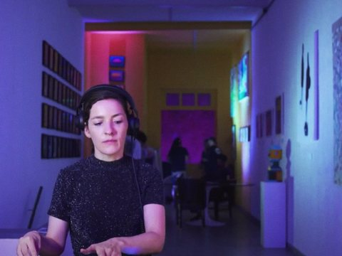
001 Azo - — Identidade visual
-
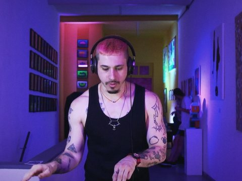
002 Caiao -
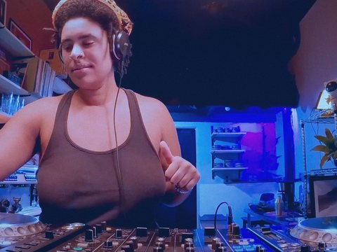
003 Marta Supernova - — maracutaia.fm
-
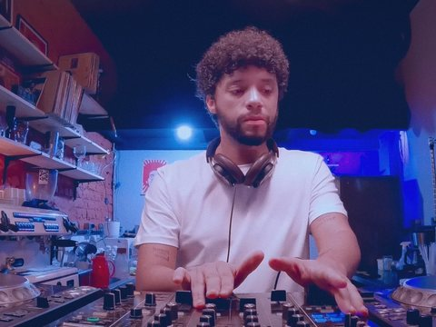
004 Rafael Não Existe
Sets gravados ao vivo◆ no reino étereo das ondas, maracutaia ressoa -
03
Coordenação de pós · séries e longas
Do cronograma
à entrega final
Coordenei o ciclo inteiro de pós de quatro produções entre série e longa, incluindo A Estranha na Cama (Netflix) e Galera FC (TNT), do planejamento à entrega final. Respondi pela viabilidade técnica e financeira de cada projeto: cronograma macro, orçamento, análise de desvio e realocação de recurso, com pipeline e gestão de ativos padronizados entre a produção executiva e as áreas técnicas.
- 04 produções
- Série e longas
- 2025
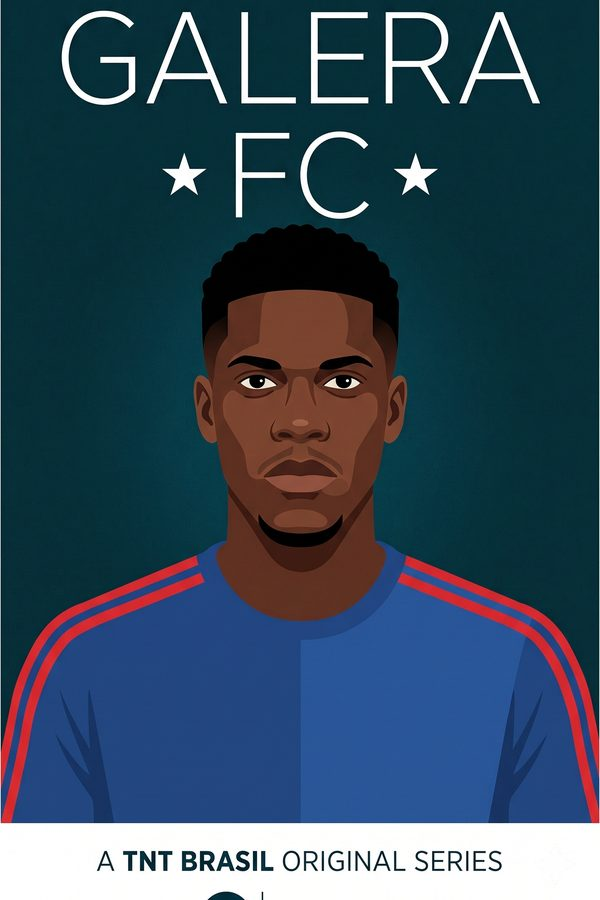
Galera FC 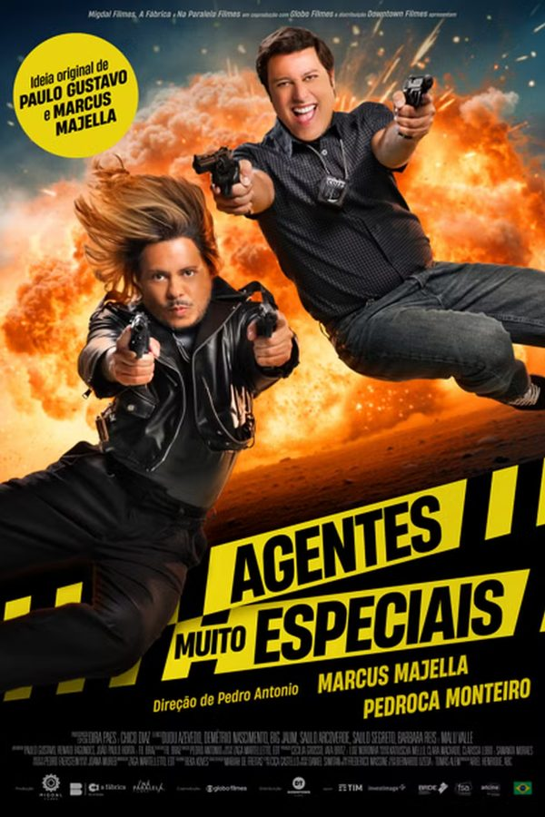
Agentes Muito Especiais 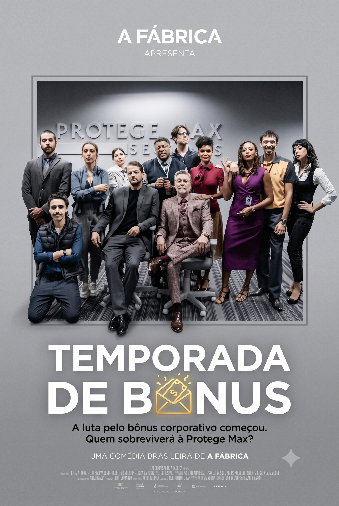
Temporada de Bônus 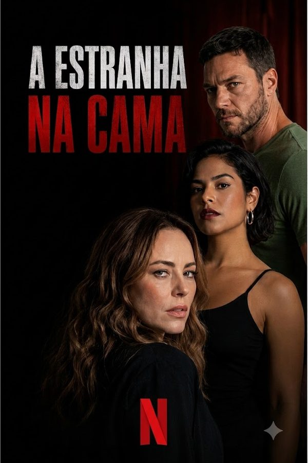
A Estranha na Cama -
04
Assistência de coordenação · Canal OFF
Episódio a episódio,
no padrão do canal
Organizei e supervisionei a pós de quatro séries do Canal OFF, 32 episódios entre documental e lifestyle, alinhando prazo, equipe e entrega ao padrão do canal e sustentando a coesão técnica e narrativa episódio a episódio.
- 04 séries do Canal OFF
- 32 episódios
- 2024 › 2025
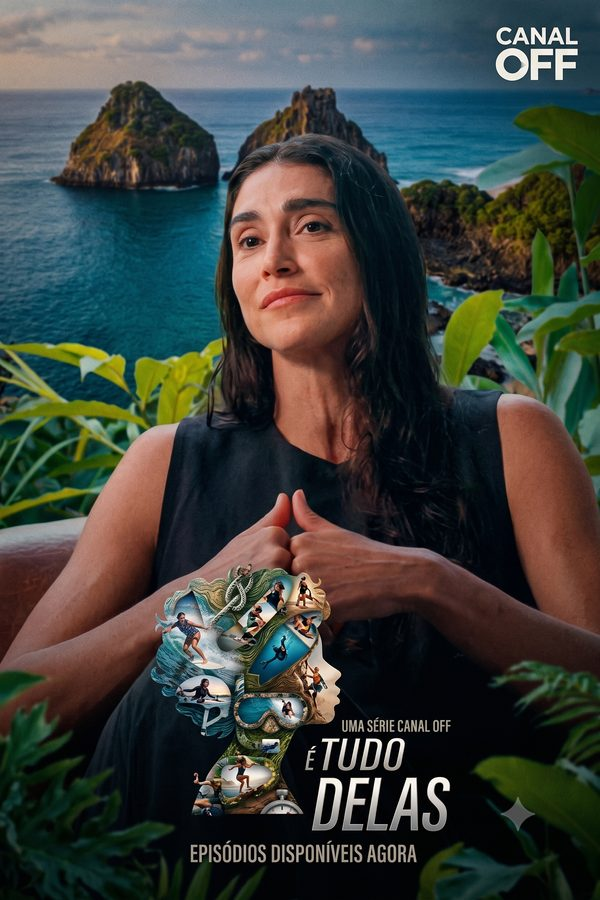
É Tudo Delas 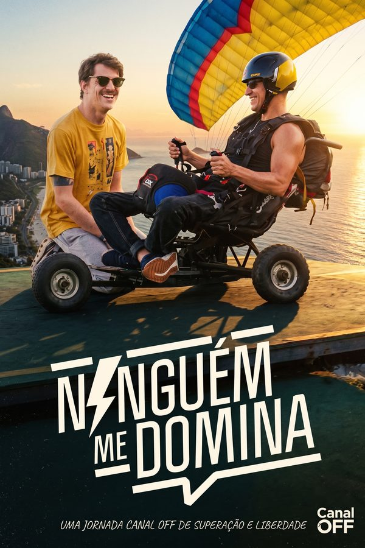
Ninguém Me Domina 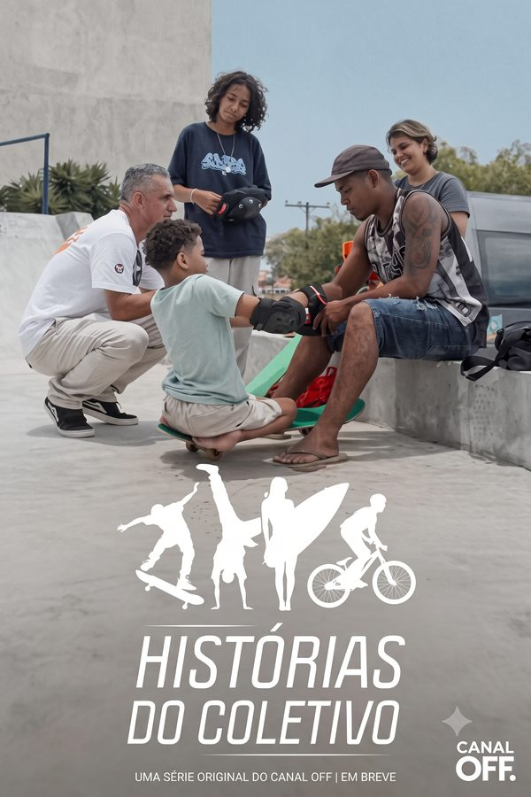
Histórias do Coletivo 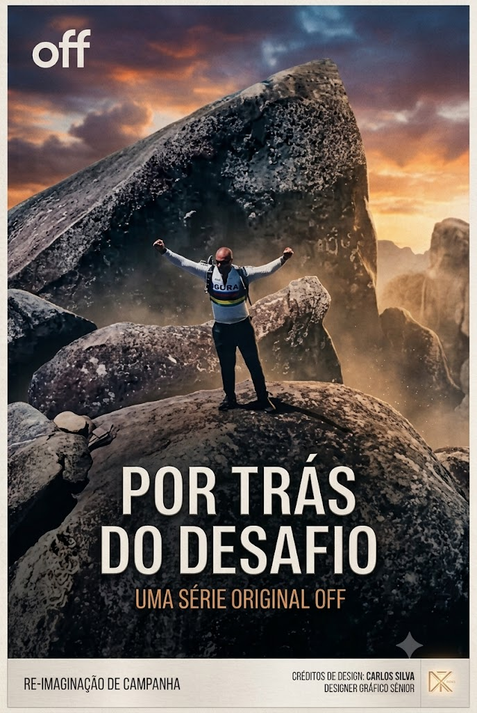
Por Trás do Desafio -
05
Assistência de coordenação · streamings globais
Originais para
streaming globalGeri o fluxo de materiais e entregáveis de seis produções para Netflix, Disney+, Star+ e HBO Max, sob padrão técnico internacional e prazo rígido. Fui a interlocução entre produtoras, ilhas de edição e plataformas, antecipando gargalo em projeto multiepisódico e respondendo pelo conform técnico de cada especificação.
- 06 produções
- 04 plataformas globais
- 2023 › 2024
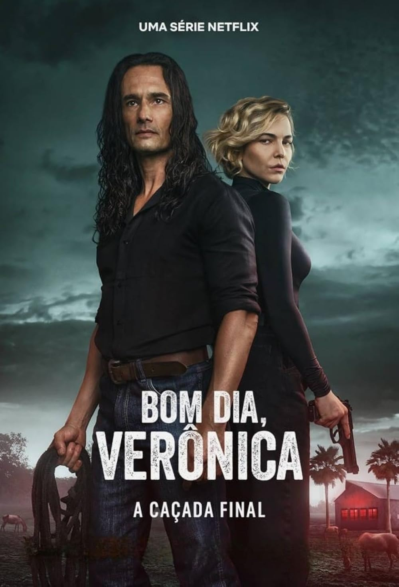
Bom Dia, Verônica 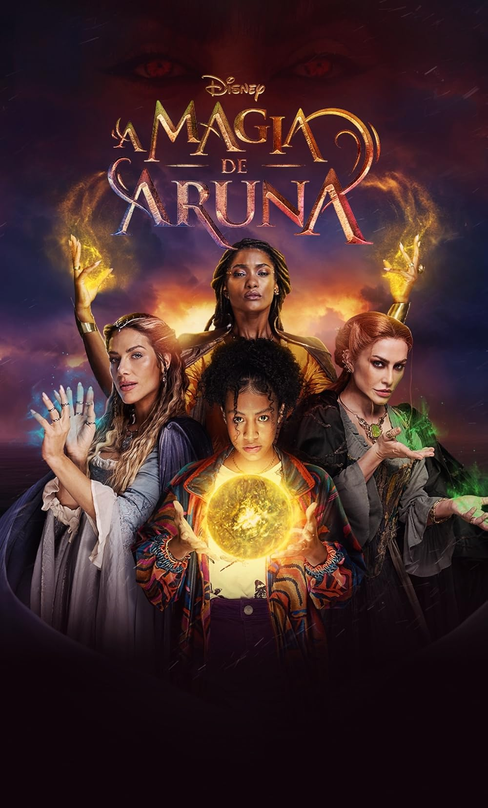
A Magia de Aruna 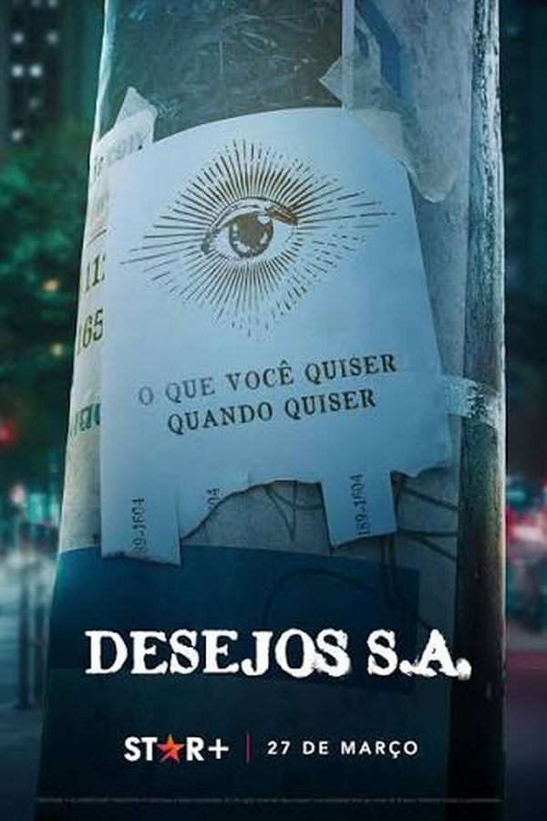
Desejos S.A. O Lado Bom de Ser Traída 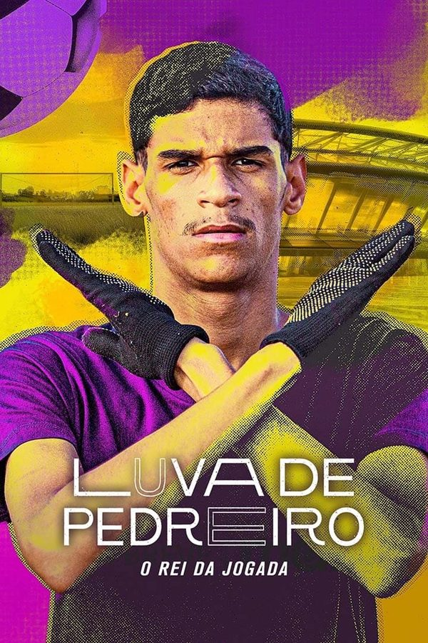
Luva de Pedreiro 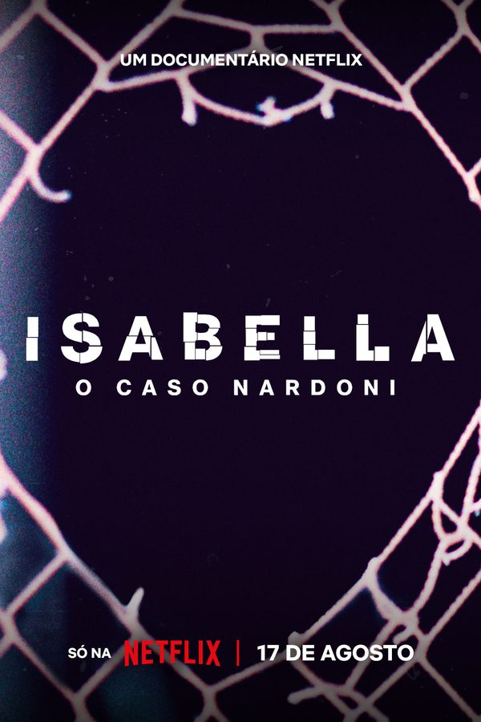
Isabella: o Caso Nardoni -
06
Coordenação de pós-produção · humor semanal
Linha de produção
do humorConduzi a operação que colocava três esquetes novas no ar por semana, para múltiplas plataformas, em alta demanda e prazo crítico: edição, motion e finalização rodando em paralelo, alocação de horas por equipe e processo padronizado entre criação, produção e pós. Os relatórios de fluxo e de controle de qualidade que montei sustentaram as decisões de capacidade produtiva.
- 03 entregas por semana
- Multiplataforma
- 2022 › 2023
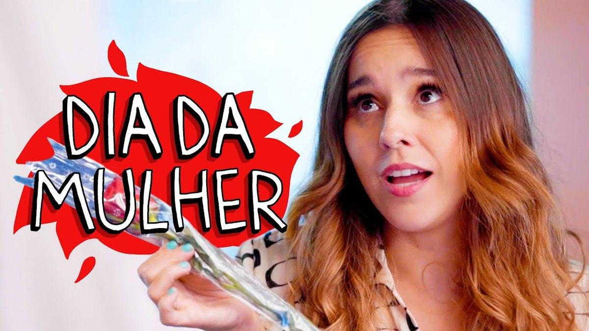
Ver uma esquete - Roteiro
- Gravação
- Edição
- Pós
- No ar
-
07
Assistência de coordenação · originais brasileiros
A primeira ficção
original da Paramount+Em As Seguidoras, primeira produção original de ficção da Paramount+ no Brasil, conformei materiais em todas as etapas da pós e supervisionei a criação e a integração das telas de dispositivos, elemento dramático central da série. Em Coração Suburbano, documental estrelado por Rafael Portugal, organizei e conformei materiais e padronizei as entregas dentro do prazo da plataforma.
- 02 produções
- Paramount+ Brasil
- 2021 › 2022
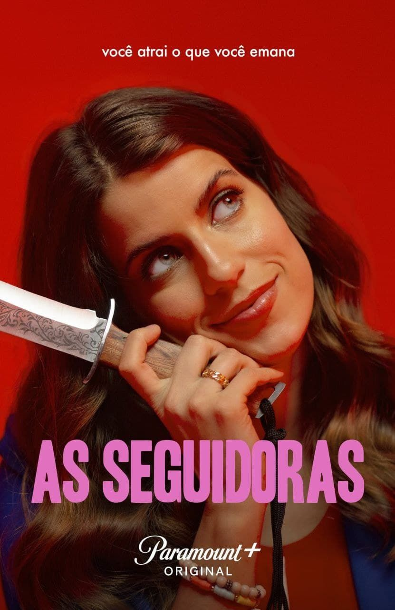
As Seguidoras 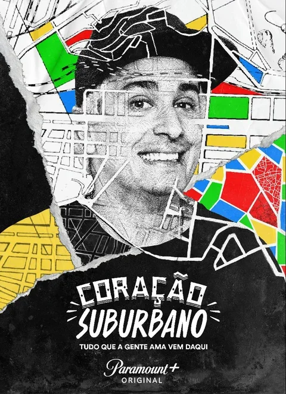
Coração Suburbano -
08
Roteiro de formatos · 2021
Três frentes,
três públicosDesenvolvi e escrevi formatos originais em três frentes, cada uma com público e régua editorial diferentes: conteúdo pedagógico com meta de retenção no Descomplica, narrativa de marca na NotCo e expansão de portfólio digital no Discovery+.
- Desenvolvimento e roteiro
- 03 frentes
- 2021
-
Descomplica
Conteúdo pedagógico traduzido em linguagem audiovisual, com foco na retenção do público estudantil.
-
NotCo
Alimentação, tecnologia e branding articulados numa única narrativa de marca.
-
Discovery+
Formatos alinhados à linha editorial do canal dentro do ambiente de streaming.
-
09
Edição e finalização · Canal Brasil e A&E
Finalização técnica,
refino de roteiroNas séries 302 e 502, do Canal Brasil, preparei e finalizei tecnicamente os episódios sustentando a consistência visual e narrativa entre temporadas, e escrevi promos e conteúdo digital para redes. Em Era de Ouro, da A&E, apoiei a finalização e colaborei no refinamento de roteiro e edição em parceria com o Omelete.
- 03 produções
- Canal Brasil · A&E
- 2019 › 2021
-
10
Roteiro diário · game show ao vivo
Dez segundos
para responderEscrevi o Dez Segundos todo dia: dez perguntas, dez segundos por resposta, três alternativas. Estrutura de episódio, questões e interações desenhadas para o ritmo do ao vivo e para transformar conteúdo de estudo em entretenimento na reta final do ENEM.
- Ao vivo às 21h, todo dia
- Níveis 01 › 05
- ENEM 2019
-
11
Edição e finalização · podcast literário
Quatro anos
de escutaEditei e finalizei os episódios por mais de quatro anos, construindo a identidade sonora do podcast e mantendo o mesmo padrão de escuta entre as temporadas, num projeto dedicado a vozes femininas na literatura.
- Podcast literário independente
- Mais de 04 anos no ar
- 2018 › 2022
Competências
Edição & finalização
- DaVinci Resolve
- Adobe Premiere Pro
- Conform técnico
- Organização de mídias
- Soluções de backup
Operação & gestão
- Cronograma macro
- Gestão de ativos
- Padronização de pipeline
- Relatórios de fluxo e QC
- Padrões de streaming
Conteúdo & editorial
- Roteiro de formatos
- Promos
- Curadoria de conteúdo
- Escrita crítica e curatorial
IA no audiovisual
- Transcrição e decupagem
- Edição baseada em texto
- Magic Mask · Voice Isolation
- QC assistido
- NLP aplicado a conteúdo
Escrita
-
Ex-TV Nerd
(abre em nova aba)
Balanço da década de 2010 organizado por janela (aberta, paga básica, paga premium e streaming), porque a lógica de produção de cada uma é diferente e medir todas pela mesma régua é o vício que premiação e crítica repetem. A tese: elevar a TV a arte engessou um único referencial de qualidade, o da produção cara com linguagem cinematográfica e nome de peso na ficha técnica. Entre um argumento e outro, a conta do mercado: contratos bilionários de showrunner, os 300 milhões de The Morning Show e a dívida da Netflix na corrida por catálogo.
-
TV de Qualidade
(abre em nova aba)
Monografia que vira do avesso o conceito de televisão de qualidade. A alcunha, na crítica e no mercado, quase sempre se cola ao drama; aqui o objeto é a comédia da TV paga americana: história, conceito e função social do gênero, com a HBO no centro por ser o canal que consolidou o termo no próprio discurso institucional. A pergunta do título é a provocação: quando comédias viraram dramas de 30 minutos?
-
Ruptura da HBO
(abre em nova aba)
Enlightened (HBO, 2011) como caso-limite: uma dramédia que expõe os paradoxos de mercado da TV paga contemporânea e o preço de sustentar um discurso de diferenciação. O artigo destrincha como o canal construiu a marca em cima do “não é TV” e o que acontece quando o próprio produto não cabe na régua que ele criou.